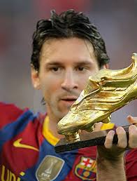
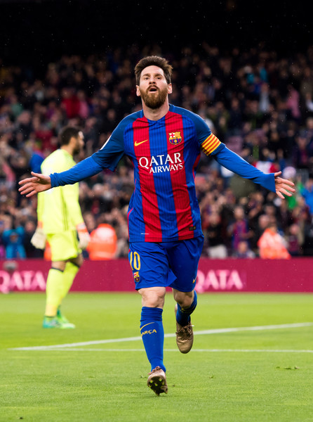
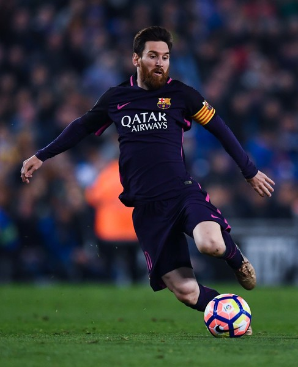
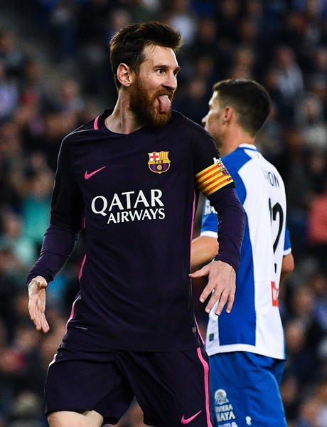
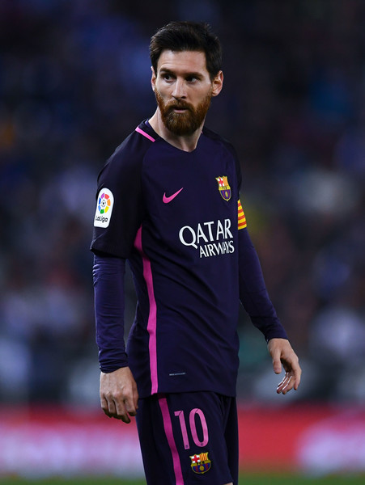
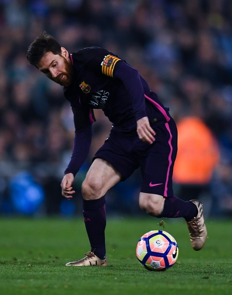
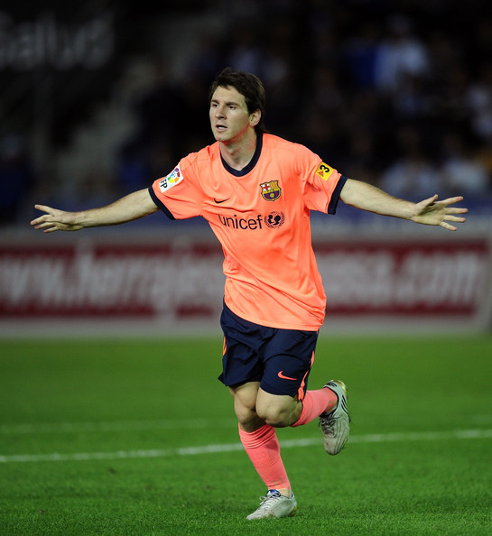
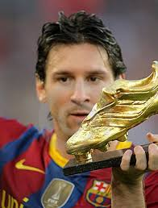
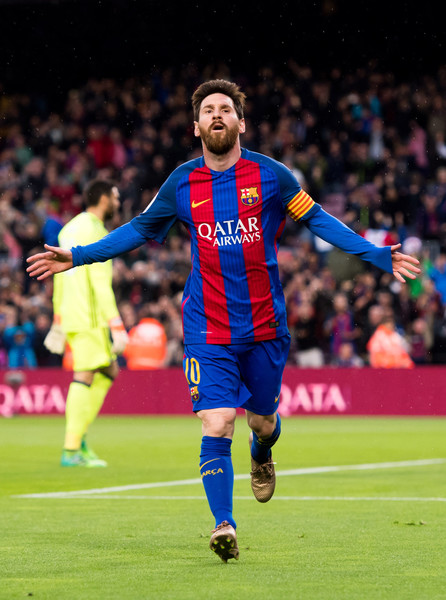
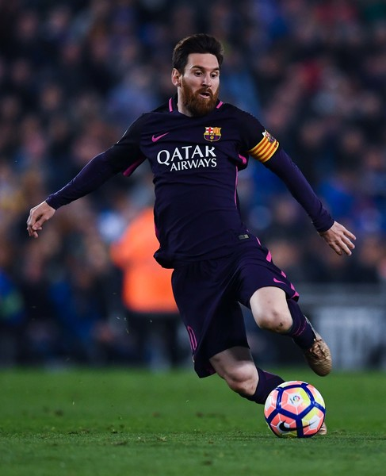
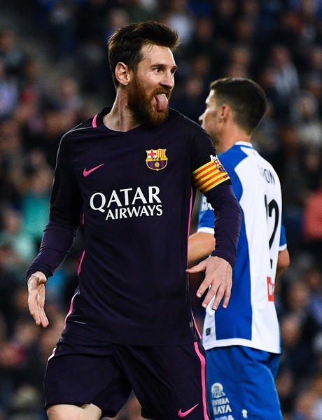
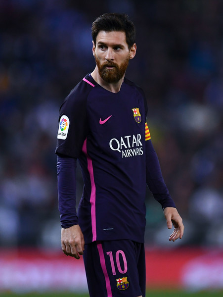
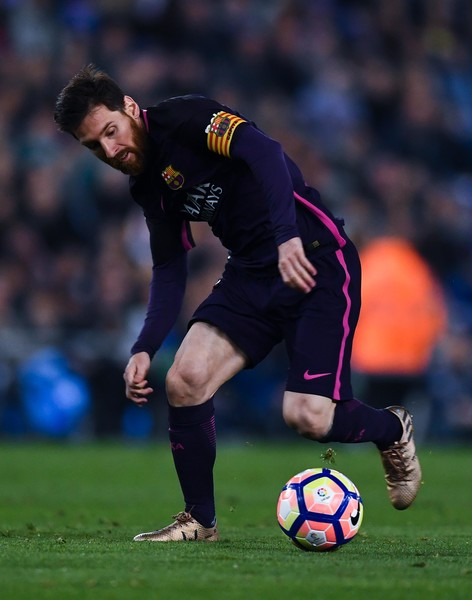
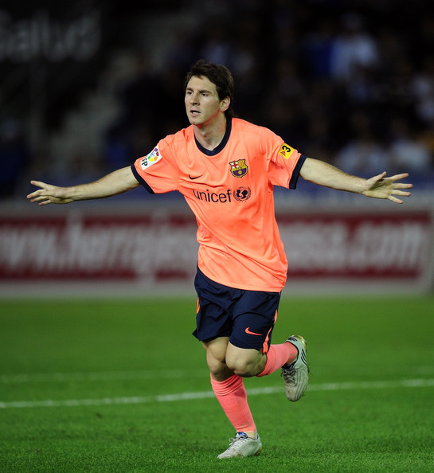
 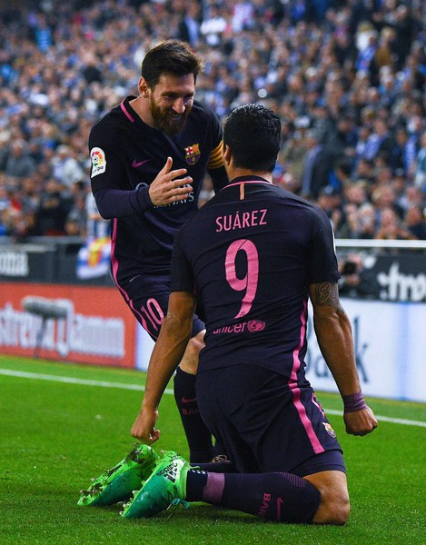
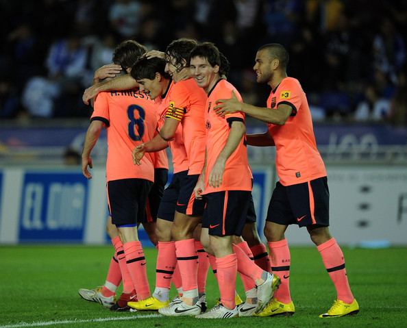
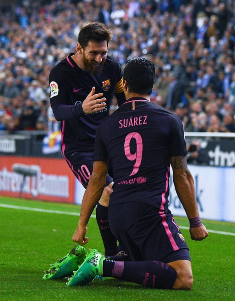
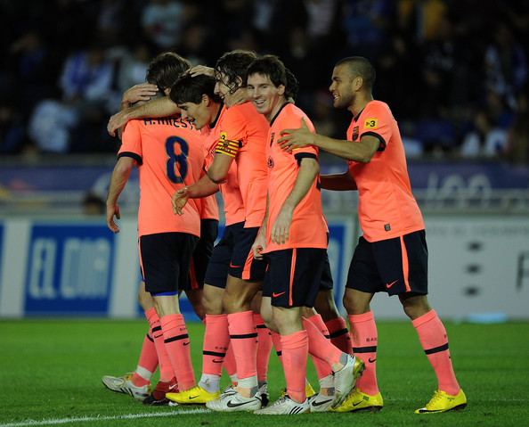

Lionel Andr?s Messi (born 24 June 1987 in Rosario) is an Argentine international football player who currently
plays for FC Barcelona in the Primera Divisi?n, and appears on Argentina's national team. Often touted in the
media as New Maradona, Messi has been publicly named as his "successor" by Diego Maradona himself.
He is regarded as the best football player of his generation and one of the best in the history of the sport.
Messi received several Ballon d'Or and FIFA World Player of the Year nominations by the age of 21, and won in 2009 and 2010.